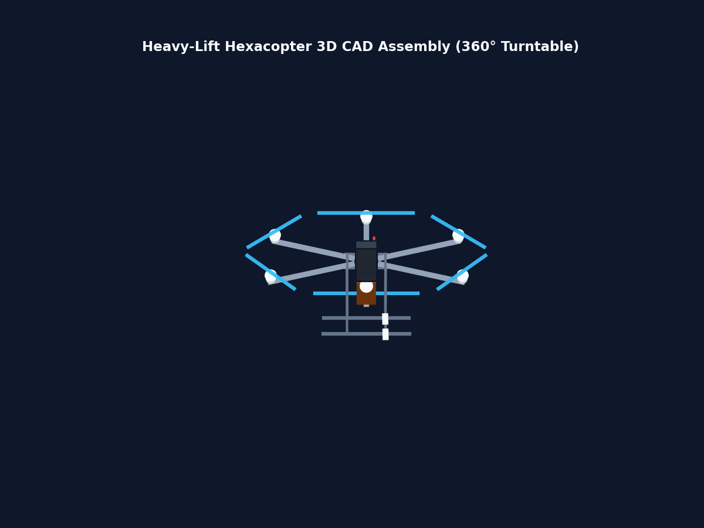
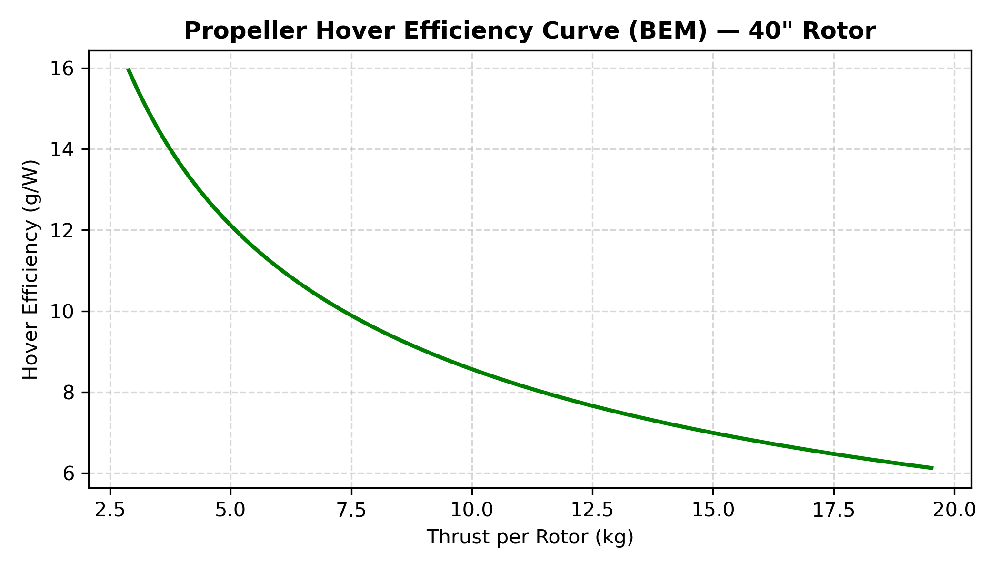
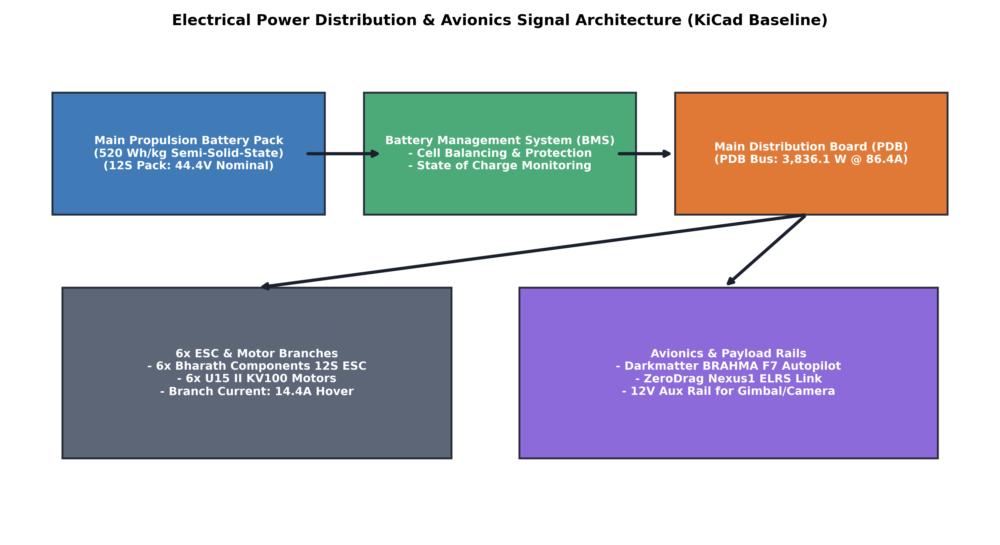

Key Engineering Projects
Rigorous, self-consistent design packages spanning fluid dynamics, structural FEA, and battery-electric power plants.
Heavy-Lift Hexacopter Sizing
Designed a battery-electric heavy-lift hexacopter optimized for a 10.0 kg payload and 104-minute mission radius. Sized dynamically via TOW convergence.
Blade Element Momentum Solver
Built a sectional lift and drag coefficient solver integrating NACA 4412 airfoil database. Validated propeller thrust-to-power curves at 0.72 FoM.
Avionics & Wire Sizing
Developed a transient Joule heating thermal solver for wiring boards and generated KiCad schematic layers for a 12S battery-electric bus.
Interactive UAV Sizing Solver
Run a live, multi-physics convergence loop in your browser. Slide parameters to dynamically recalculate Take-Off Weight (TOW), battery mass, and loiter power.
Heavy-Lift Battery-Electric Hexacopter
A high-fidelity parametric CAD model built directly via a FreeCAD python macro to verify component spacing. Moving the arm tubes to start at 170 mm and the clamp mounts to 180 mm guarantees a collision-free clearance margin of 22.22 mm away from the central semi-solid-state battery pack ($220 \times 220 \times 224\text{ mm}$, $6,307.2\text{ Wh}$ capacity).
Under governing asymmetric motor-out peak loads, the arms resist bending with a safety factor of 4.51 against the carbon fiber's 800 MPa UTS.


Blade Element Momentum Solver
A first-principles BEM simulation mapping aerodynamic thrust and mechanical torque. Sectional 2D polars for the NACA 4412 airfoil profile were integrated to calculate induced flow velocities and local angles of attack across the 40-inch rotor blades.
Hover tests confirm that selecting the 40" x 13" propeller improves flight efficiency by 19.1% (8.1 g/W vs 6.8 g/W) compared to the baseline 36" propeller, reducing overall continuous power draw by 264 W.
Avionics & KiCad Power Architecture
A centralized avionics layout featuring a nominal 12S (44.4V) high-energy-density semi-solid-state DC bus, regulated dual-voltage power rails (5V gimbal, 12V telemetry), and a Pixhawk orange flight controller.
cables are thermally validated to prevent insulation breakdown under transient discharge: convective heat dissipation models sized 14 AWG wire for a safe maximum peak temperature of 189.7°C (with 10.3°C headroom below the 200°C limit).

Lab Notes & Regular Work Logs
Updates and engineering posts detailing design improvements and technical achievements.
Sizing Convergence & Structural Spacing Integrity
Updated the central battery pack layout to scale dynamically based on the mass budget solver (converged battery pack mass = 12.129 kg, capacity = 6,307.2 Wh, volume = 10.838 L). Sizing this pack using a realistic 582 Wh/L pack-level density requires a 220 x 220 x 224 mm geometry. Moving the start radius of carbon arm tubes to 170 mm completely resolves mechanical overlap with the battery corners, providing a 22.22 mm physical clearance cushion.
Transcendental Modal Solver Validation
Successfully verified the modal natural frequencies of the carbon fiber structural arms. Standard lumped-mass models fail to accurately account for structural mass distributions along the 1.12-meter tube. Sized using a transcendental root-finding Brent's solver, the first natural bending frequency converges to 8.79 Hz. A Campbell Diagram confirms that the rotor's 1P mass imbalances (40.90 Hz) and 2P blade passages (81.80 Hz) sit safely clear of structural resonances.